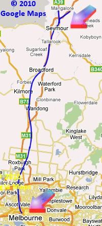

Victoria - North-Eastern Mainline 1950s
Flinders Street to Avenel (version 1.3)
Route design by Russell Beer
Another quality production from team-ALCO
Overview
This route depicts the Victorian Railways North Eastern Mainline between Melbourne and Seymour before the Standard gauge was built. The track exists from Avenel southwards, but no structures have been placed yet from Mangalore to Avenel.
Between Melbourne and Seymour all the scenery is in, bar for a few things like carspawners and a couple of crossing pieces which will be fixed at a later date.
This route has the Heathcote track so far without structures to Pyalong and a couple of miles of the Alexandra/Mansfield branchline track branching off at Tallarook.

Prototype Operator: Victorian Railways.
What's New in v1.3?
- Overhead wire height set to 5.8m
- Start-up option to set wire for "city" or "country" running (see readme after installation)

Note: Version 1.3 is the version distributed with the team-ALCO "Spirit Of Progress" and "Taits" packs.